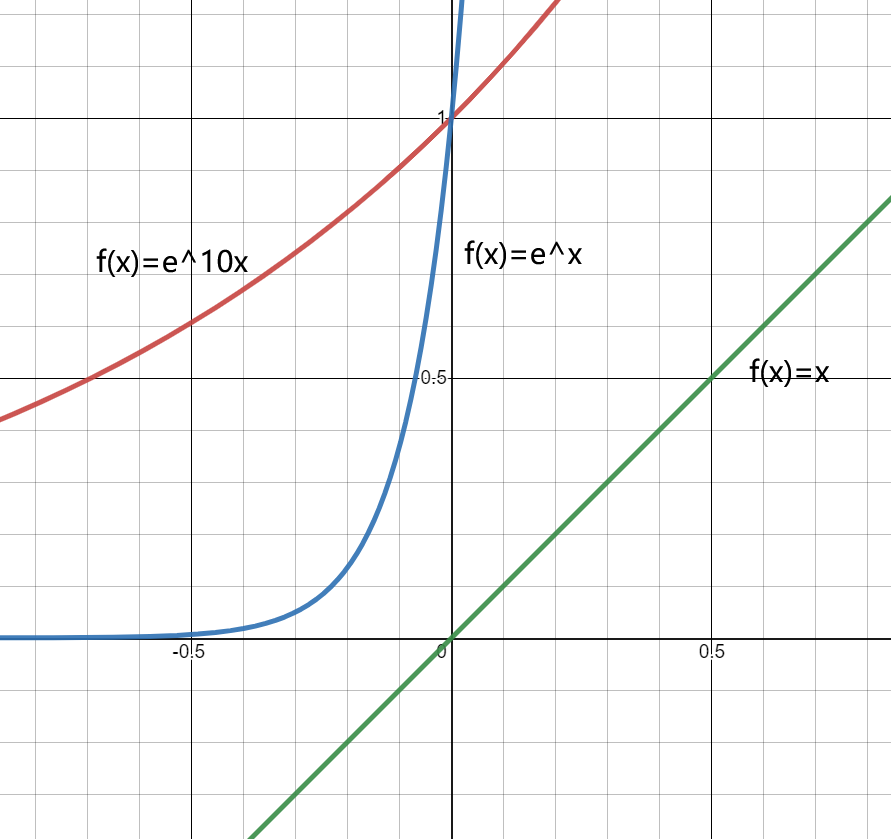

PyTorch 中的 softmax 函数解读
简介
前言
在学习 torch.nn.CrossEntropyLoss() 时看到有从 argmax->softmax->logsoftmax->NLLLoss->CrossEntropyLos 思路解释 CrossEntropyLoss 的文章，顺带简要学了下 softmax ，这里做个简要总结。
众所周知，argmax 是求极大值点的 index，此函数不可导，也无法计算梯度。为了满足 “需要使用 argmax 同时也需要求导计算梯度” 这一应用场景，softmax 被应用在了 argmax 上。又因为指数函数增长过快，很容易产生一个巨大的值，为了防止数值溢出，又有了 logsoftmax。接下来将分别介绍 softmax，softargmax 和logsoftmax。
softmax
softmax 函数的表达式如下：
$$
softmax(x)=\frac{e^{x_i}}{\sum\limits_je^{x_j}}
$$
对 softmax 求导为：
$$
\begin{aligned}
\frac{\partial,softmax(x_i)}{\partial, x_i}&=\frac{e^{x_i}\sum\limits_je^{x_j}-e^{x_i}\cdot e^{x_i}}{(\sum\limits_je^{x_j})^2}\
&= \frac{e^{x_i}}{\sum\limits_je^{x_j}}\cdot\frac{\sum\limits_je^{x_j}-e^{x_i}}{\sum\limits_je^{x_j}}\
&= softmax(x_i)\cdot(1-softmax(x_i))
\end{aligned}
$$
重新观察一下 softmax 函数的形式，其实就是在指数形式下当前值在总和中所占的比例，如果当前值 $x$ 为最大值，那么 $softmax(x)$ 将接近 1。
那么为什么不直接求所占比例，而是求个指数？答案显而易见，为了凸显 max 值相对于其他值的大小，如下式：
$e^{0.5}-e^{0.4}\approx 0.15689>0.5-0.4=0.1$。
差距越大，采用指数的优势越明显，可以从 $f(x)=x$ 和 $f(x)=e^x$ 的图示中看出这点：
softargmax
为了解决 argmax 不可导的问题，引入 softmax ，由于 softmax 的值在最大值处接近 1，那么乘上对应的 index 就可以完成 argmax 的功能，softargmax 的函数如下：
$$
softargmax=\sum\limits_i\frac{e^{x_i}}{\sum\limits_je^{x_j}}i
$$
但是这样有个问题，极大值和其他值的差距有可能不够明显，导致求得的值和真实的 argmax 有一定的差距：如 $2.7669$ 和 $3$，可以引入一个常量解决这个问题，改进后的 softargmax 函数如下：
$$
softargmax=\sum\limits_i\frac{e^{\beta x_i}}{\sum\limits_je^{\beta x_j}}i
$$
$\beta$ 可以取个任何值，加了常量之后，极大值的凸显效应更加明显了(可以看上图中 $f(x)=e^{10x}$ 和 $f(x)=e^x$ 的对比。
logsoftmax
但是 softmax 会有函数上溢的问题，也就是求指数函数之后值太大，所以解决方法就是对 softmax 求一个 log。
logsoftmax 的函数表达式如下：
$$
logsoftmax(x_i)=\log\frac{e^{x_i}}{\sum\limits_je^{x_j}}
$$
对 logsoftmax 求导为：
$$
\begin{aligned}
logsoftmax(x_i)&=\log\frac{e^{x_i}}{\sum\limits_je^{x_j}}\
&=\log e^{x_i}-\log \sum\limits_je^{x_j}\
&=x_i-\log\sum\limits_je^{x_j}\
\end{aligned}
$$
$$
\begin{aligned}
\frac{\partial,logsoftmax(x_i)}{\partial x_i}&=1-\frac{e^{x_i}}{\sum\limits_je^{x_j}}\
&=1-softmax(x_i)
\end{aligned}
$$
logsoftmax 的优点：
解决函数上溢和下溢的问题，加快运算速度，提高数据稳定性。
如果还是想要 softmax 的结果，但是又想运行稳定怎么办？既然 logsoftmax 取了 log，那再取个指数就行了。